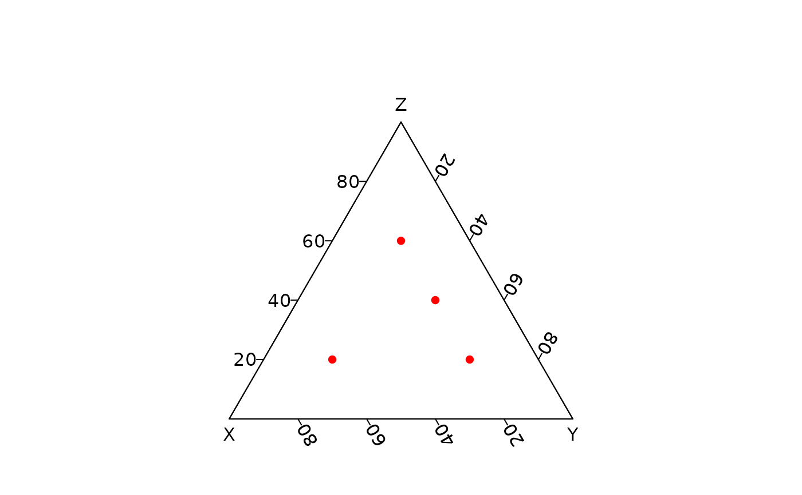
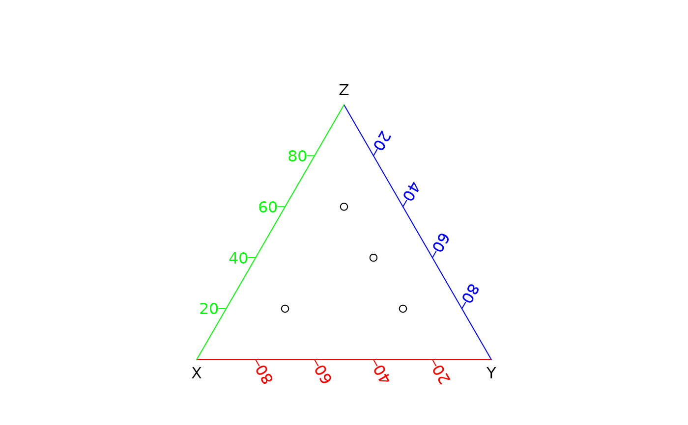
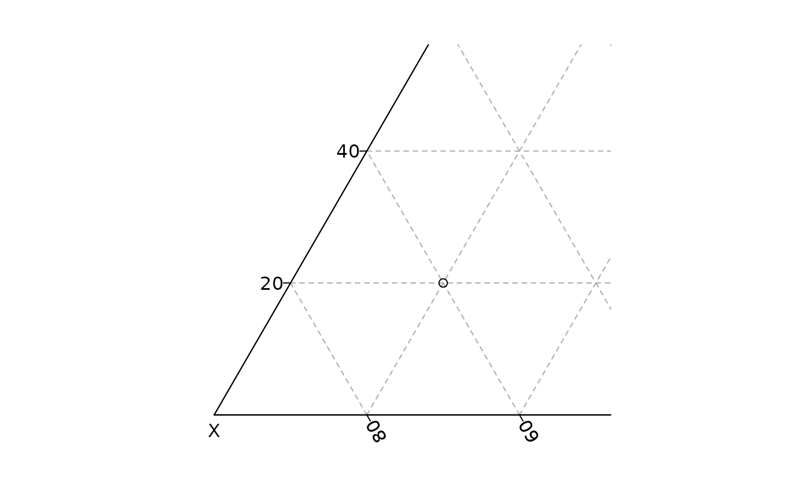
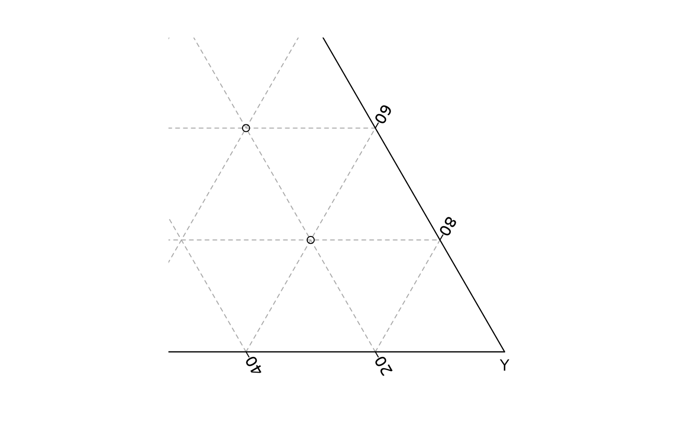
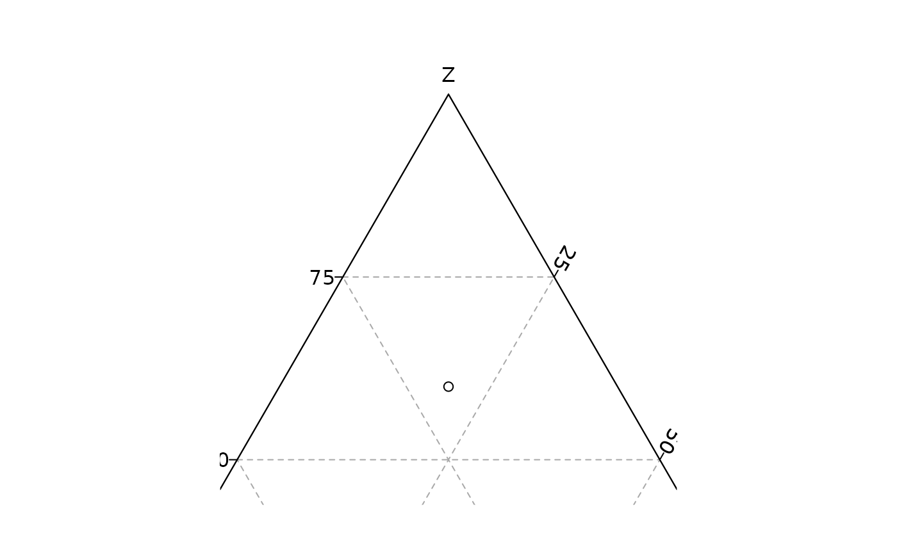

Produces a ternary plot.
Usage
ternary_plot(x, y, z, ...)
# S4 method for numeric,numeric,numeric
ternary_plot(
x,
y,
z,
xlim = NULL,
ylim = NULL,
zlim = NULL,
xlab = NULL,
ylab = NULL,
zlab = NULL,
main = NULL,
sub = NULL,
axes = TRUE,
frame.plot = axes,
panel.first = NULL,
panel.last = NULL,
...
)
# S4 method for ANY,missing,missing
ternary_plot(
x,
xlim = NULL,
ylim = NULL,
zlim = NULL,
xlab = NULL,
ylab = NULL,
zlab = NULL,
main = NULL,
sub = NULL,
axes = TRUE,
frame.plot = axes,
panel.first = NULL,
panel.last = NULL,
...
)Arguments
- x, y, z
A
numericvector giving the x, y and z ternary coordinates of a set of points. Ifyandzare missing, an attempt is made to interpretxin a suitable way (seegrDevices::xyz.coords()).- ...
Other graphical parameters (see
graphics::par()).- xlim
A length-two
numericvector giving thexlimits in the range \([0,1]\).- ylim
A length-two
numericvector giving theylimits in the range \([0,1]\).- zlim
A length-two
numericvector giving thezlimits in the range \([0,1]\).- xlab, ylab, zlab
A
characterstring giving a label for the x, y and z axes.- main
A
characterstring giving a main title for the plot.- sub
A
characterstring giving a subtitle for the plot.- axes
A
logicalscalar: should axes be drawn on the plot?- frame.plot
A
logicalscalar: should a box be drawn around the plot?- panel.first
An an
expressionto be evaluated after the plot axes are set up but before any plotting takes place. This can be useful for drawing background grids.- panel.last
An
expressionto be evaluated after plotting has taken place but before the axes, title and box are added.
See also
Other plot methods:
ternary_axis(),
ternary_grid(),
ternary_lines(),
ternary_points(),
ternary_polygon(),
ternary_text()
Examples
## Blank plot
ternary_plot(NULL)
## Compositional data
coda <- data.frame(
X = c(20, 60, 20, 20),
Y = c(20, 20, 60, 40),
Z = c(60, 20, 20, 40)
)
## Ternary plot
ternary_plot(coda, pch = 16, col = "red")

## Add a grid
ternary_plot(coda, panel.first = ternary_grid(5, 10))
## Add axis
ternary_plot(coda, axes = FALSE)
ternary_axis(side = 1, col = "red")
ternary_axis(side = 2, col = "blue")
ternary_axis(side = 3, col = "green")

## Zoom
ternary_plot(coda, xlim = c(0.5, 1), panel.first = ternary_grid())

ternary_plot(coda, ylim = c(0.5, 1), panel.first = ternary_grid())

ternary_plot(coda, zlim = c(0.5, 1), panel.first = ternary_grid())
